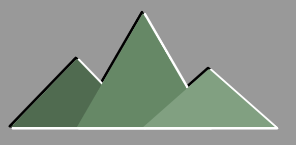
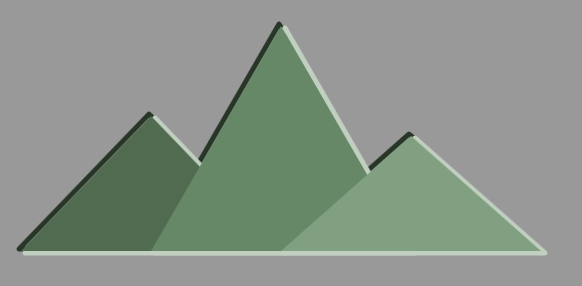
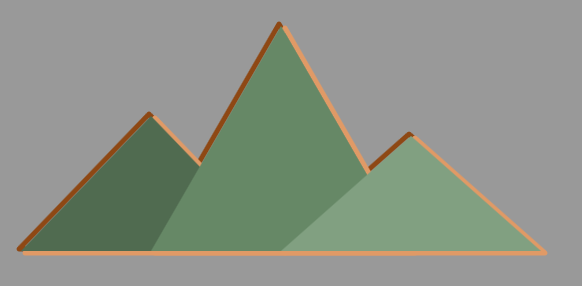
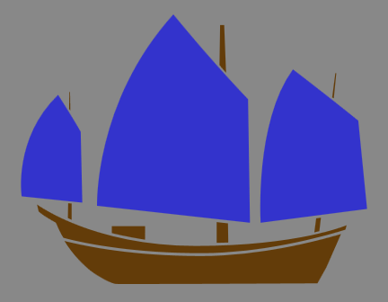
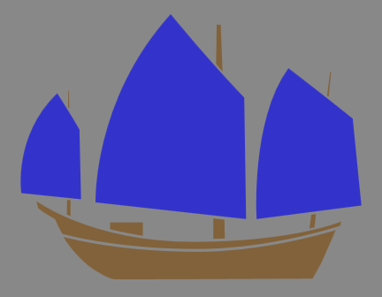

- Over 8 years of professional experience making web.*
- Web Developer at Getty Images in Seattle, WA:
- Front end web development (HTML, CSS/Sass, JavaScript/jQuery) focused on CMS integration
The tips of colored pencils / IvanJekic
About Me
What's color?

- Our eyeballs are just sensors which report those wavelengths.
- Infrared and lower / ultraviolet and higher wavelengths also exist
Subtractive vs. Additive Color
Subtractive

- Pigments absorbing light
- CMYK
- print, e-paper
Additive

{kind=link}
- Emitted light beams
- RGB
- screens
Color Blindness
~4% of humans have some form of color deficiency
- 8% of men, 0.5% of women
- Roughly 1 out of 25 humans
- Do you still support browsers < 4% of traffic?
Types of colorblindness
- Common: no or low green-sensing
- Rare: no or low red-sensing
- Complete color deficiency is very rare.
Testing for Colorblindness: Photoshop
- View > Proof Setup > Color Blindness > "Protanopia-type" | "Deuteranopia-type"
- View > Proof Colors
SassConf.com
SassConf.com Deuteranopia vision
SassConf.com Deuteranopia vision
Testing for Colorblindness: JavaScript
Using simulate.js from http://mudcu.be/labs/
var images = document.getElementsByTagName("img");
for (var i = 0; i < images.length; i++) {
Color.Vision.Simulate(images[i], {
type: "Deuteranope",
callback: function(canvas) {
document.body.appendChild(canvas);
}
});
Color.Vision.Simulate(images[i], {
type: "Protanope",
callback: function(canvas) {
document.body.appendChild(canvas);
}
});
}
Testing for Colorblindness: JavaScript
Mixing your palette

Demo: Mixing your palette (1/4)
<svg id="thing" xmlns="http://www.w3.org/2000/svg" >
<g class="main">
<polygon class="peak1" points="5,235 135,100 265,235" />
<polygon class="peak2" points="135,235 265,10 395,235" />
<polygon class="peak3" points="265,235 395,120 525,235" />
</g>
<g class="shadow">
<polygon class="peak1" points="3,233 133,98 263,233" />
<polygon class="peak2" points="133,233 263,8 393,233" />
<polygon class="peak3" points="263,233 393,118 523,233" />
</g>
<g class="highlight">
<polygon class="peak1" points="9,237 139,102 269,237" />
<polygon class="peak2" points="139,237 269,12 399,237" />
<polygon class="peak3" points="269,237 399,122 529,237" />
</g>
</svg>
Demo: Mixing your palette (2/4)
$mountain-color: #686;
.peak2 { fill: $mountain-color; }
.peak1 { fill: darken($mountain-color, 10%); // #506b50 }
.peak3 { fill: lighten($mountain-color, 10%); // #81a081 }
$highlight: white;
$shadow: black;
g.highlight {
fill: transparent;
stroke: $highlight;
stroke-width: 5;
stroke-linejoin: round;
}
g.shadow {
@extend g.highlight;
stroke: $shadow;
}

Demo: Mixing your palette (3/4)
$highlight: mix($mountain-color, white, 40%); // #c1cfc1
$shadow: mix($mountain-color, black, 40%); // #283628
g.highlight {
fill: transparent;
stroke: $highlight;
stroke-width: 5;
stroke-linejoin: round;
}
g.shadow {
@extend g.highlight;
stroke: $shadow;
}

Demo: Mixing your palette (4/4)
$highlight-base: #FF5F00;
$highlight: mix($mountain-color, lighten($highlight-base, 20%), 20%); // #e09a66
$shadow: mix($mountain-color, darken($highlight-base, 20%), 20%); // #8e4814
g.highlight {
fill: transparent;
stroke: $highlight;
stroke-width: 5;
stroke-linejoin: round;
}
g.shadow {
@extend g.highlight;
stroke: $shadow;
}

Why mix()?
| 10% | 20% | 30% | 40% | 50% | 60% | 70% | 80% | 90% | 100% | |
| lighten() | #d379a6 | #dfa0bf | #ecc6d9 | #f9ecf2 | #ffffff | #ffffff | #ffffff | #ffffff | #ffffff | #ffffff |
| darken() | #ad3972 | #862d59 | #602040 | #3a1326 | #14060d | #000000 | #000000 | #000000 | #000000 | #000000 |
| mix() | #b24a7e | #9e4270 | #8a3a62 | #763154 | #632946 | #4f2138 | #3b182a | #27101b | #13080d | #000000 |
| 10% | 20% | 30% | 40% | 50% | 60% | 70% | 80% | 90% | 100% | |
| lighten() | #ff7f33 | #ff9f66 | #ffbf99 | #ffdfcc | #ffffff | #ffffff | #ffffff | #ffffff | #ffffff | #ffffff |
| darken() | #cc4c00 | #993900 | #662600 | #331300 | #000000 | #000000 | #000000 | #000000 | #000000 | #000000 |
| mix() | #e55500 | #cc4c00 | #b24200 | #993900 | #7f2f00 | #662600 | #4c1c00 | #321200 | #190900 | #000000 |
Distance: Photograph

- Smaller
- Higher in frame
- Less saturated, less contrast
Distance: Painting

- Smaller
- Higher in frame
- Less saturated, less contrast
- Paler color, bluer
Distance: At Sunset

- Smaller
- Higher in frame
- Less saturated, less contrast
- Paler color, bluer
- More sky color
- "Atmospheric perspective" or "aerial perspective"
Demo: Atmospheric Perspective (1/3)
<svg version="1.1" width="400px" height="300px" [...] >
<g class="sail">
<path d="M21.971,55.244c0,0-0.907-29.936,22.043-55.244c11.43,13.97,21.59,24.492,21.59, [...] />
[...]
</g>
<g class="hull">
<path d="M86.649,58.691l-1.361,0.182l-0.544,4.082c0.544-0.182,0.998-0.272,1.451-0.362L86.649,58.691z" />
[...]
</g>
</svg>
$sail: #33c;
$hull: #633c09;
.sail {
fill: $sail;
}
.hull {
fill: $hull;
}

Demo: Atmospheric Perspective (2/3)
$sail: #33c;
$hull: #633c09;
.hull {
fill: mix($hull, white, 80%);
}

Demo: Atmospheric Perspective (3/3)
$sail: #33c;
$hull: #633c09;
.sail {
fill: mix($sail, complement($sail), 70%);
}
Thank You!